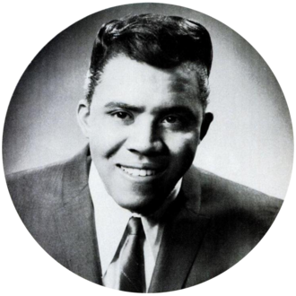

Jimmy Ruffin
Jimmy Lee Ruffin was an American soul singer, and the older brother of David Ruffin, the lead singer of the Temptations. He had several hit records between the 1960s and 1980s, the most successful being the Top 10 hits "What Becomes of the Brokenhearted" and "Hold On ".
Complete Discography & Tracklists (24)
1961 The Myth of Jimmy Ruffin 🎵 15 Tracks
1989 Greatest Motown Hits 🎵 20 Tracks
2008 The Essential Jimmy Ruffin (Re-record) 🎵 14 Tracks
2008 What Becomes Of The Brokenhearted / I've Passed This Way Before 🎵 2 Tracks
2009 Motown 7" Singles No. 6 🎵 2 Tracks
2010 I Am My Brother's Keeper - Expanded Edition 🎵 14 Tracks
2012 Jimmy Ruffin - There Will Never Be Another You (MP3 Album) 🎵 11 Tracks
2013 Sings Top Ten 🎵 12 Tracks
2014 What Becomes of the Brokenhearted (Original Recordings) 🎵 15 Tracks
2014 The Motown Anthology 🎵 25 Tracks
2014 The Groove Governor 🎵 12 Tracks
2014 Ruff 'N Ready 🎵 12 Tracks
2014 Don't Feel Sorry for Me 🎵 0 Tracks
No tracks registered.
2015 The Soul Sound of (Rerecorded) 🎵 15 Tracks
2018 Hold On To My Love (Billboard Hot 100 - No 10) 🎵 1 Tracks
2018 What Becomes of the Brokenhearted (Billboard Hot 100 - No 07) 🎵 1 Tracks
2018 Gonna Give Her All The Love I've Got (Billboard Hot 100 - No 29) 🎵 1 Tracks
2018 Tell Me What You Want (Billboard Hot 100 - No 39) 🎵 1 Tracks
2018 I've Passed This Way Before (UK Chart Top 40 - No. 29) 🎵 1 Tracks
2018 There Will Never Be Another You (UK Chart Top 100 - No. 68) 🎵 0 Tracks
No tracks registered.